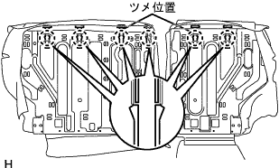
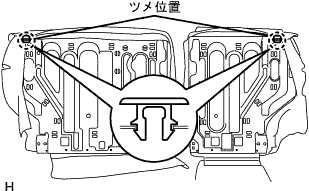
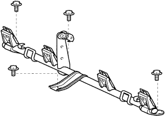

Rear seat ASSY (split) decomposition |
| 1. Remove the rear seat cushion cover & pad |
Use a roof molding rimover to flip the lower part of the rear seat cushion cover.
Remove the hogling and remove the rear seat cushion cover and pad.
| 2. Remove the rear seat cushion and remove |
Remove the rear seat cushion and cross.
| 3. Remove the rear seat cushion lock hook RH |
 |
Remove the bolt and remove the rear seat cushion rock hook RH.
| 4. Remove the rear seat hook ASSY RH |
|
Remove the two bolts and remove the rear seat hook assessy.
| 5. Remove the rear seat track bracket cover |
Remove the claws on the inner side and the outer side, and remove the rear seat truckt cover cover.
| 6. Remove the rear seat headrest ASSY |
Remove two rear seat headrest ASSY from the rear seat Batsuku ASSY.
| 7. Remove the rear seat headrest ASSY CTR |
Remove the rear seat headrest ASSY CTR from the rear seat Batsuku ASSY.
| 8. Remove the rear seat back stop release button |
Turn in the counterclockwise direction and remove two rear seat bats top release buttons.
| 9. Remove the rear seat headrest support |
 |
Use the clip resover to remove 15 clips.
Turn over the seat cross cover and remove the hogling.
|  |
Remove the claws and remove the rear seat headrest support.
| 10. Remove the rear seat backstop button gromet |
|  |
Remove the claws and remove the rear seat Batsukustop butonromet.
| 11. Rena seat backpad SUB-ASSY (cover Tsuki) |
Remove the rear seat Batsuku cover & pad RH.
| 12. Remove the rear seat Batsuku Andchlow removed |
Remove the rear seat cross -round cross.
| 13. Rear seat backpad SUB-ASSY (cover Tsuki) LH removed |
Remove the rear seat Batsuku cover & pad LH.
| 14. |
Remove the rear seat cross -round cross.
| 15. Remove the rear seat back lock ASSY RH |
 |
Remove the two bolts and remove the rear seat cross clock RH.
| 16. Remove the rear seat back lock ASSY LH |
Remove the two bolts and remove the rear seat cross clock LH.
| 17. Cheldrest Rain Seat Anka Bracket RH removed |
Take off the floor carpet.
|  |
Remove the four bolts and remove the Child Rest Raint Seat Anka Bracket RH.